Como funciona?
Informações sobre conceitos e mecânicas do embate contra Eidolons nas Planícies de Eidolon.
Rotação
Os eidolons nascem nas Planícies de Eidolon somente durante a noite no jogo, em uma rotação fixa em tempo real.
Tridolons
É chamado de Tridolon a sequência de capturar os três Eidolons existentes nas Planícies de Eidolon.
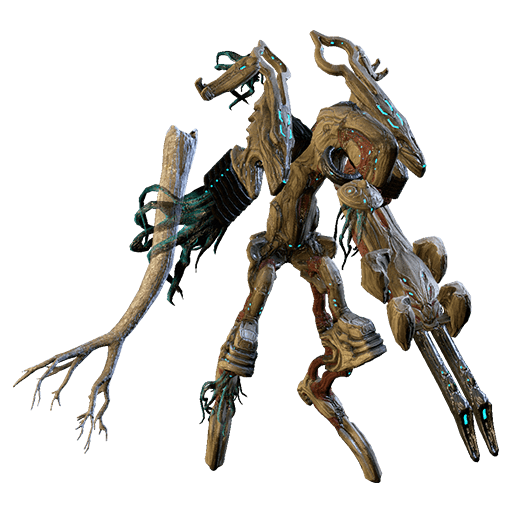
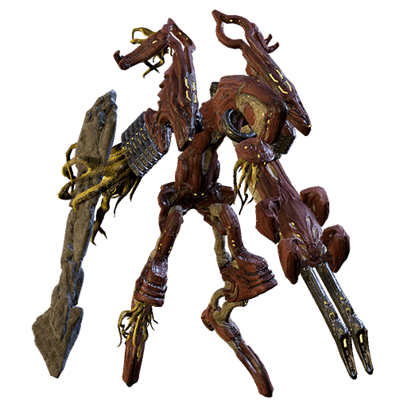
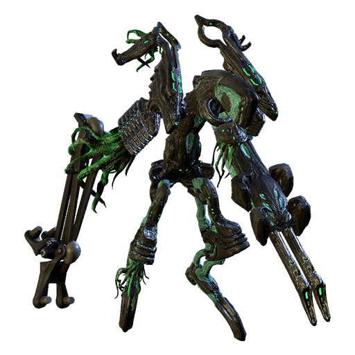
Durante o período noturno nas Planícies, o Teralista aparece naturalmente. Ao acessar as planícies, imediatamente monte em sua Archwing e voe para o alto, olhando em volta para encontrar o ponto de nascimento do Teralista, que pode ser encontrado ao identificar um brilho azul e também por seu barulho.
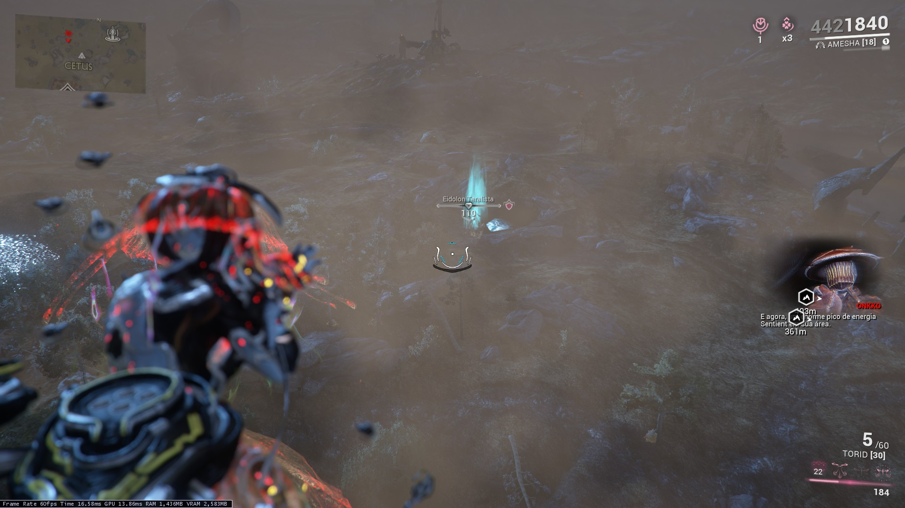
A luta contra Eidolons é simples, porém requer atenção. Ao nascer, os Eidolons estarão invulneráveis a dano padrão, pois estão protegidos por um escudo que só pode ser destruído por dano da Amp do operador.
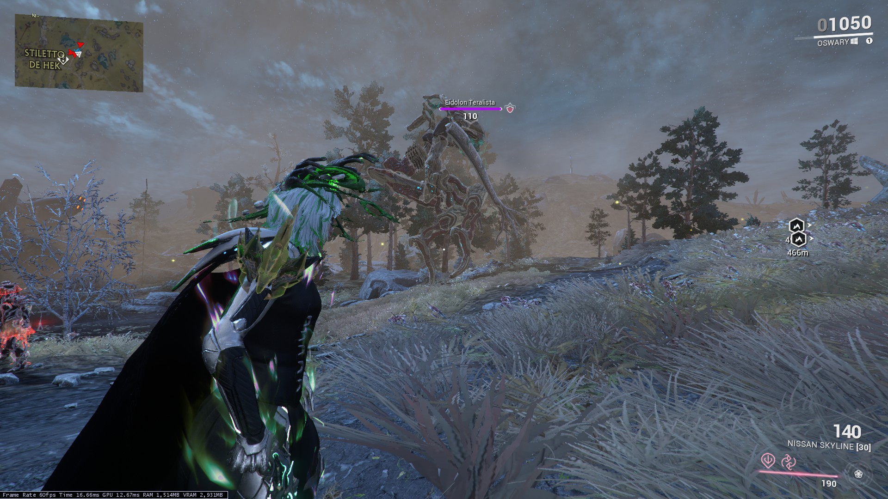
Desta forma, o primeiro passo na luta contra um Eidolon é usar o operador para remover o escudo. Após o escudo ser removido, o Eidolon se torna vulnerável a dano padrão, porém apenas em seus pontos fracos, chamados Sinóvias.
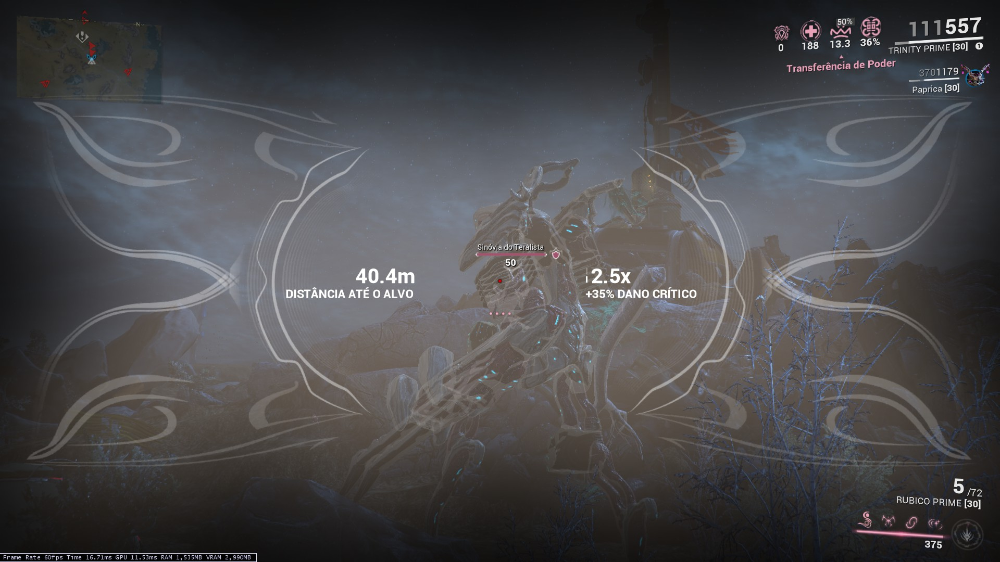
O Eidolon Teralista contém 4 sinóvias a serem destruídas, localizadas em seus "joelhos e cotovelos". Já o Eidolon Gantulista e o Eidolon Hidrolista possuem 6 sinóvias cada, com duas sinóvias em "suas costas" adicionais.
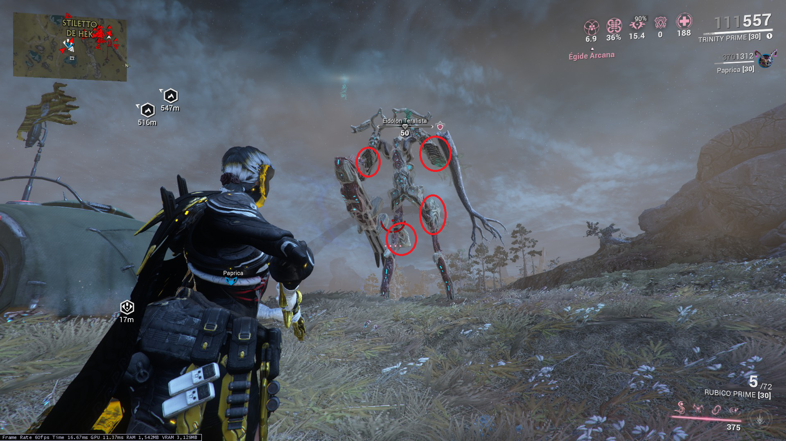
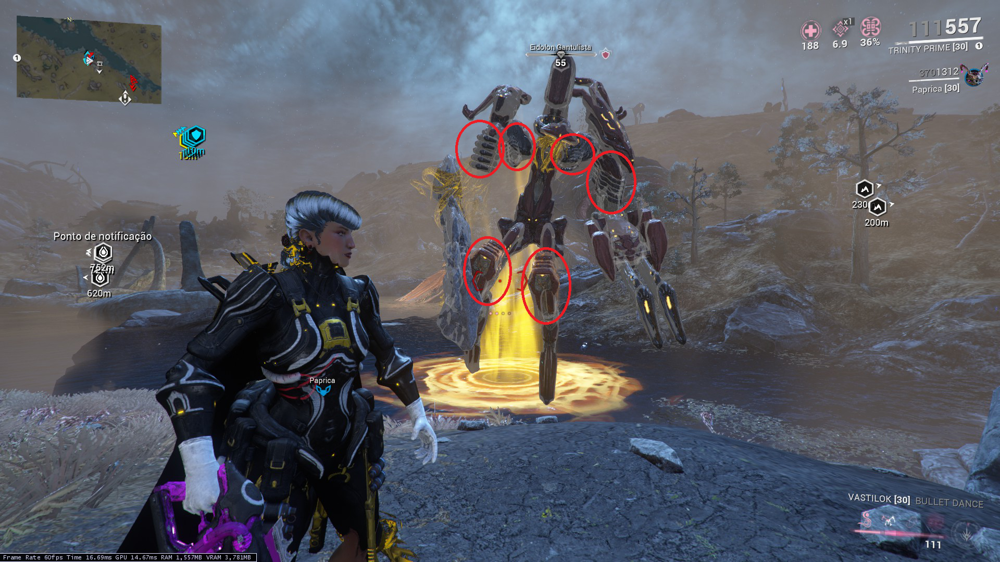
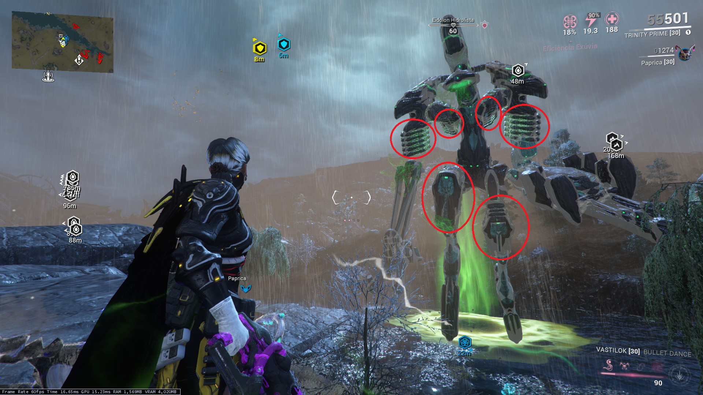
Após destruir todas as sinóvias, o Eidolon é derrubado, enquanto chama por Eidolon Vonvalistas. Após alguns segundos deitado, o Eidolon levanta uma última vez, onde pode ser derrotado e eliminado ou capturado.
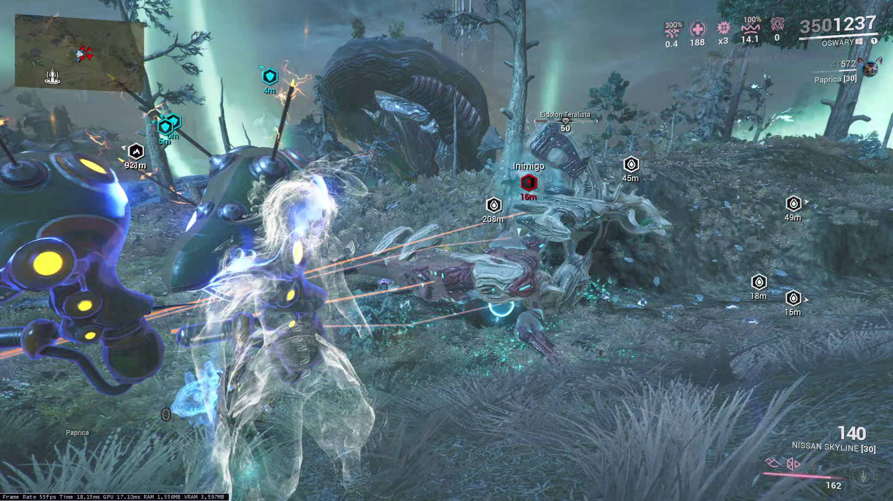
Eliminação vs. Captura
Existem dois métodos para lidar com os Eidolons: Eliminar ou capturar. De forma geral, a captura é mais vantajosa. As recompensas variam de acordo com o método escolhido, mas mais importante, a captura recompensa o jogador com o recurso NECESSÁRIO para invocação dos Eidolons subsequentes. Ou seja: Eliminar um Eidolon encerra o ciclo.
Para capturar um Eidolon, é necessário que todas as sinóvias destruídas estejam conectadas a uma Isca de Eidolon carregada antes da eliminação. Caso o Eidolon seja eliminado sem este requerimento, é considerado uma eliminação e não captura.
Uma nomenclatura bastante utilizada para referenciar a quantidade de caçadas por noite é algo como "1x3", ou "2x3 + 1", que se referem a "Uma rodada de captura dos três Eidolons" e "Duas rodadas de captura dos três Eidolons mais uma captura de um Teralista adicional".
Invocação de Gantulista e Hidrolista
Os Eidolons Gantulista e Hidrolista podem ser invocados após a captura de um Eidolon anterior. Para realizar a invocação do Gantulista, é necessário utilizar um Fragmento de Eidolon (Brilhante), obtido após a captura de um Eidolon Teralista, no Altar de Invocação presente no meio do mapa, enquanto para a invocação de um Eidolon Hidrolista, é necessário utilizar um Fragmento de Eidolon (Radiante), obtido após a captura de um Eidolon Gantulista.
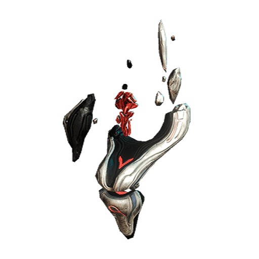
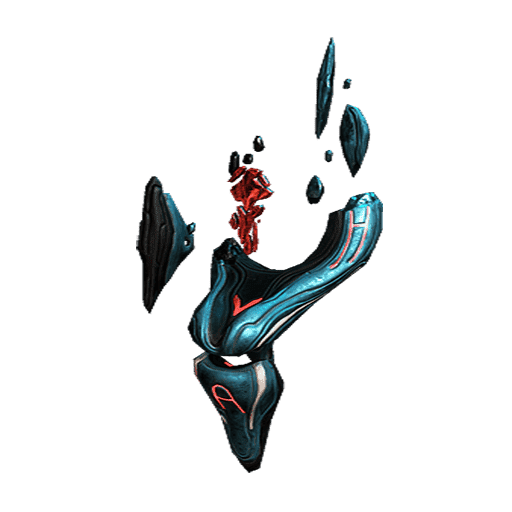
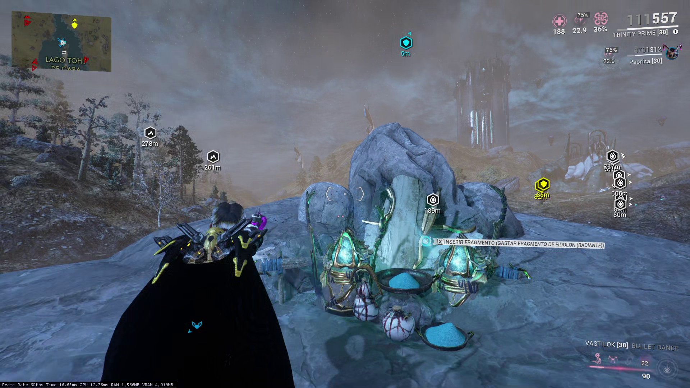
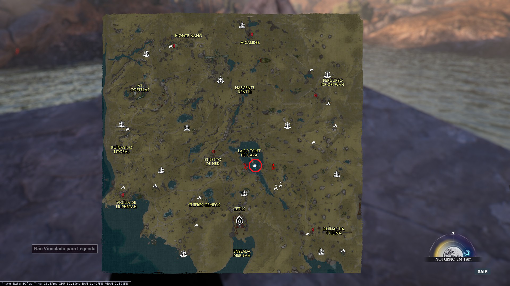
Iscas de Eidolon
As Iscas de Eidolon são itens que permitem a captura dos Eidolons. Elas são encontradas nos diversos campos de Grineer nas planícies durante a noite.
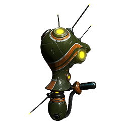
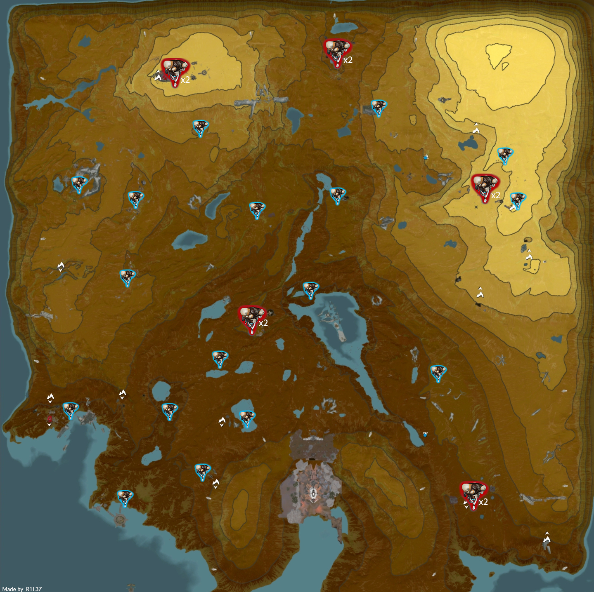
O jogador deve inicialmente destruír-las, e então hackeá-las para converter-las em Iscas aliadas. Estas iscas irão seguir o jogador que as hackeou.
Para carregá-las, o jogador deve matar Eidolon Vonvalistas nas proximidades das Iscas. Cada isca requer três Eidolon Vonvalistas para ser carregada. O jogador pode entender que a Isca está carregada quando seu ícone se tornar azul.
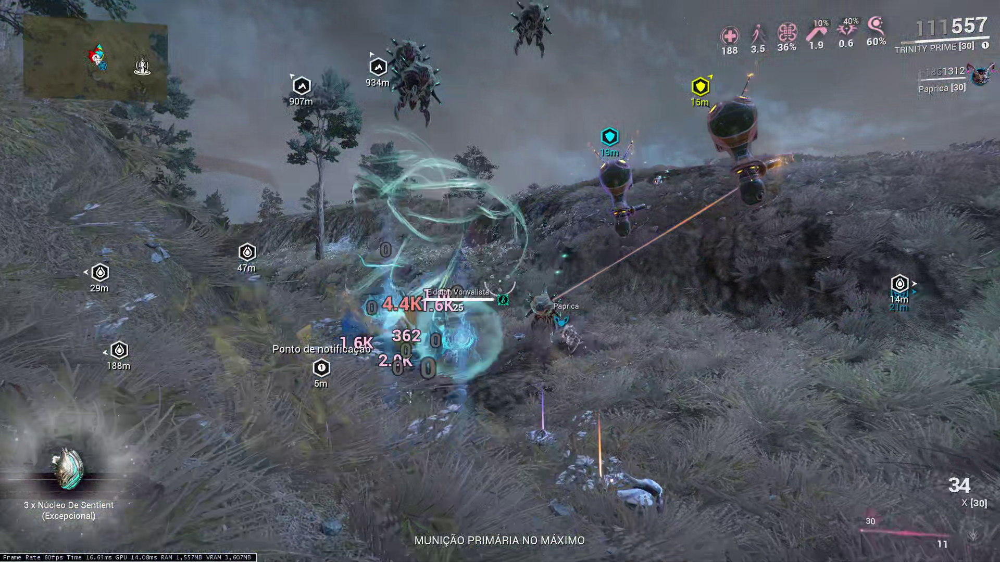
As Iscas de Eidolon irão se ligar aos pontos de sinóvias destruídas, efetivamente permitindo a captura dos Eidolons. Cada Isca pode se ligar a dois pontos de Sinóvias. Portanto, para a captura de um Teralista são necessárias duas iscas carregadas, enquanto o Gantulista e Hidrolista precisam de três. As Iscas se conectam aos pontos de sinóvias apenas quando carregadas e dentro de uma distância de 50 metros do Eidolon.
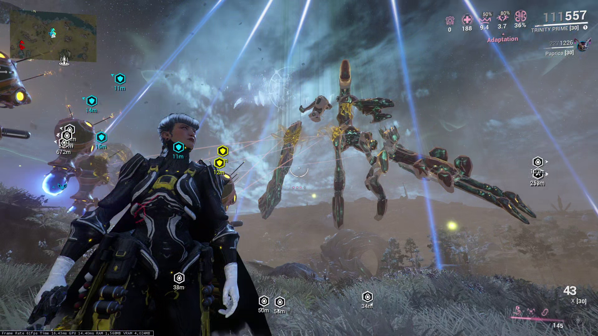
Após a captura, as Iscas responsáveis pela captura conectadas ao Eidolon serão destruídas, sendo necessário converter novas iscas para a captura de outros Eidolons.
Eidolon Vonvalista
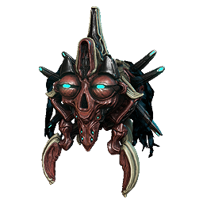
Estes inimigos são encontrados ao redor das Planícies de Eidolon no período noturno. Para matar-los, o jogador pode utilizar qualquer fonte de dano, fazendo o Vonvalista assumir sua forma de energia. Neste estado, o Vonvalista só poder ser eliminado com dano de Amp do operador. Após ser eliminado, caso uma Isca de Eidolon esteja próxima, irá absorver o Vonvalista, configurando uma carga.
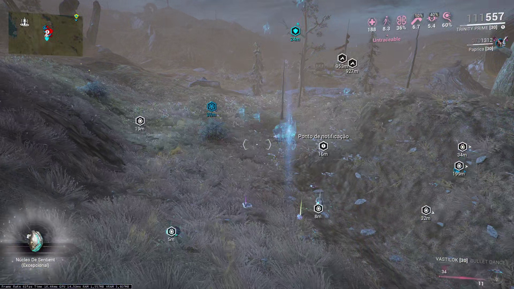
Ataques relevantes
Todos os Eidolons possuem a capacidade de chamar Eidolons Vonvalistas próximos para regenerar seu escudo. É fácil perceber o acontecimento, pois o Eidolon emite um som distinto, e todos os Vonvalistas próximos são conectados ao Eidolon com linhas de energia. Enquanto Vonvalistas estiverem conectados, o Eidolon estará recuperando seu escudo e invulnerável, portanto, todos os Vonvalistas conectados devem ser eliminados. Não é necessário eliminar os Vonvalistas em suas formas de energia para cortar a conexão com o Eidolon.

Anomalia de Vonvalista
Essa anomalia ocorre apenas durante a batalha contra o Eidolon Hidrolista. É suscetível apenas a dano de Amp, e torna todo Eidolon Vonvalista conectado nas proximidades invulnerável. É particularmente irritante caso o Hidrolista decida por chamar Vonvalistas para regenerar seu escudo.
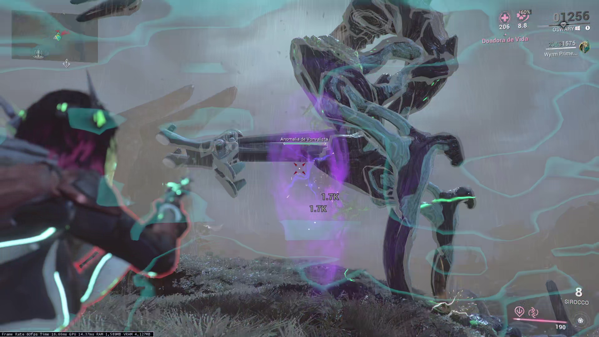